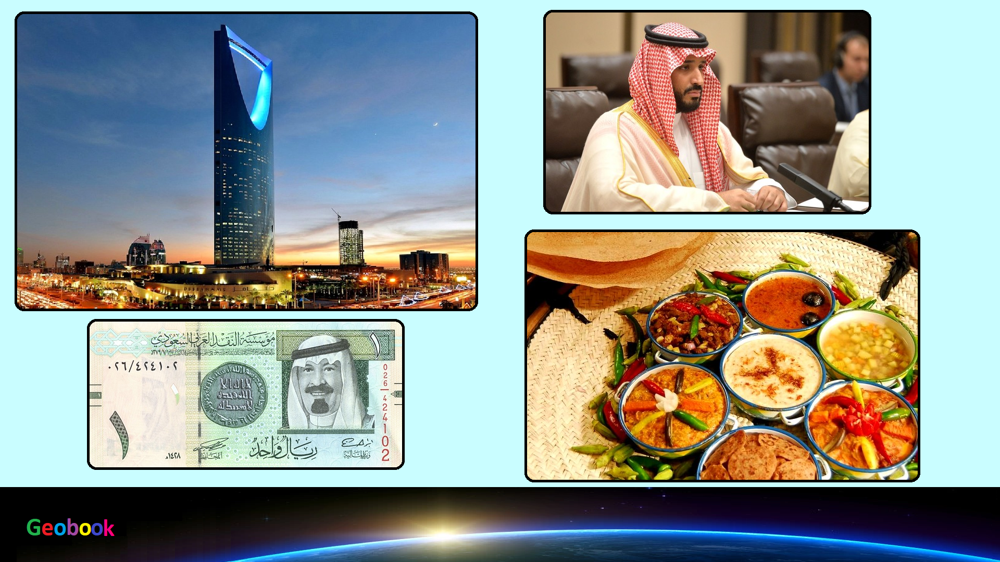

____
Климат
Климат на севере субтропический, на юге - тропический, жаркий и крайне сухой.
Средние температуры июля повсеместно держатся выше отметки в +30°С, при этом дневные максимумы нередко достигают +47-50°С, а температура в тени редко опускается ниже +42°С. В зимний период температура держится в районе +20°С в западных областях и от +8°C до +20°C - в пустынных восточных районах. При этом зимними ночами в пустыне температура может опускаться почти до нуля, хотя и летом нередка тридцатиградусная разница между дневной и ночной температурой.
Среднегодовой уровень осадков составляет не более 100-200 мм, причем распределяются они неравномерно - в центральных и восточных районах осадки возможны исключительно в феврале - апреле, на западе - с конца ноября по конец февраля. В горных районах в зимний период нередки туманы.
____
